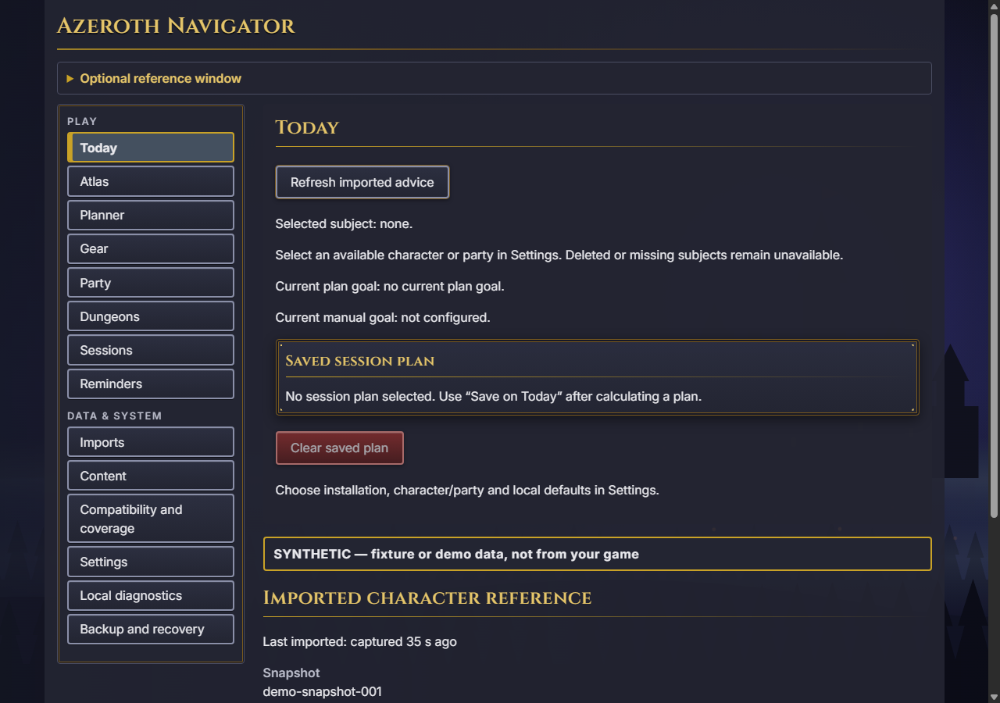

Snapshots & planning
Inspect imported state, party context, routes and gear models. Synthetic demonstrations show the workflow; real advice needs verified content.
Planning tools →PLAN WITH CONTEXT. KEEP THE UNKNOWN VISIBLE.
Bring the snapshots you capture into a quieter place to inspect, compare and prepare. A Windows desktop companion and experimental in-game addon for World of Warcraft: Forever.
Development prerelease · Windows x64 · Unsigned
No verified playable-content catalog is included.
FROM THE RELEASED APPLICATION
The companion keeps synthetic examples and missing selections visible.

TOOLS AT THE TABLE
Inspect imported state, party context, routes and gear models. Synthetic demonstrations show the workflow; real advice needs verified content.
Planning tools →Prepare local inputs, inspect provenance and compare research references. Research activation never grants playable availability.
Research boundaries →Create consistent backups, inspect diagnostics and remove the companion without silently deleting your saved state.
Keep your records →KNOW WHAT YOU ARE INSTALLING
Hosted regression checks, synthetic fixtures and live operator observations are different kinds of evidence. Full stable-release acceptance is still pending.